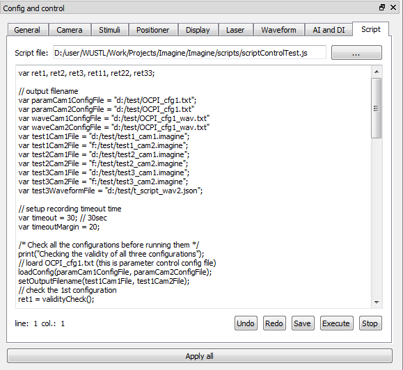

Script tab
- Script file : selects a .jl script file. Then, Imagine will display the specified script in the editing window
- Undo : undoes the last change in the editing window.
- Redo : redoes the last undo in the editing window.
- Save : saves the script in the editing window to .jl file.
- Execute : executes the script in the editing window.
- Stop : stops the execution.

In this figure, 'scriptControlTest.js' file is loaded, which shows example script descriptions.
Details about the syntex are explained in Script control mode section.